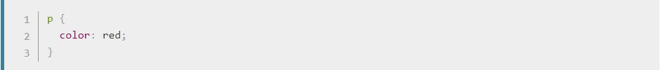
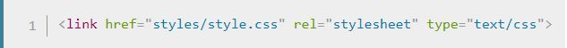
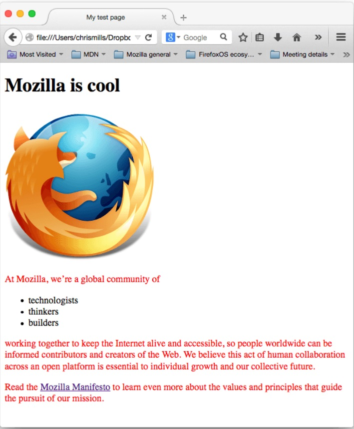
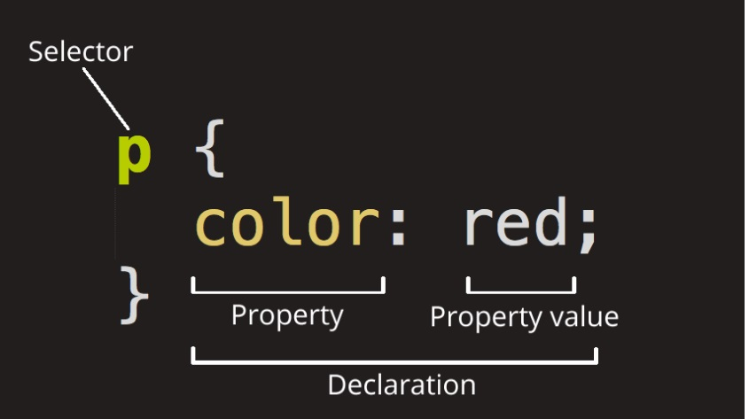
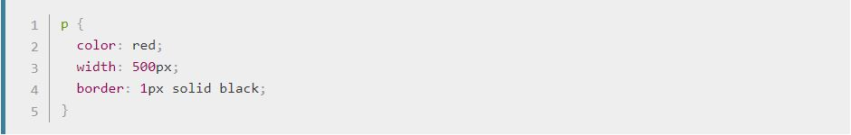

Apakah CSS Itu?
Seperti HTML, CSS bukanlah sebuah bahasa pemrograman. CSS juga bukanlah sebuah bahasa markup — ia adalah suatu bahasa style sheet. Artinya, dengan CSS kamu dapat mengaplikasikan gaya pada elemen-elemen yang ada dalam dokumen HTML. Sebagai contoh, untuk membuat teks pada seluruh elemen paragraf dalam satu halaman HTML menjadi berwarna merah, kamu akan menulis CSS sebagai berikut:
Salin ketiga baris dari kode CSS tersebut ke dalam suatu file baru di teks editor kamu, lalu simpan file tersebut sebagai style.css di direktori styles kamu.
Namun kita masih perlu untuk mengaplikasikan CSS tersebut ke dokumen HTML kamu. Jika tidak, CSS tersebut tidak akan berpengaruh pada bagaimana browser akan menampilkan dokumen HTML tersebut. (Kalau kamu belum mengikuti proyek kami, bacalah Dealing with files dan HTML basics untuk mencari tahu apa saja yang perlu kamu lakukan sebelumnya.)
- Buka file index.html kamu dan letakkan baris berikut di suatu tempat di bagian head (di antara tag dan ): 
- Simpan index.html dan buka halaman tersebut di browser kamu. Seharusnya muncul tampilan seperti ini: 
Jika teks paragraf kamu sekarang berwarna merah, selamat! Kamu berhasil menulis CSS pertama kamu.
Bagian-Bagian Dari Sebuah CSS Ruleset
Mari kita lihat CSS di atas dengan sedikit lebih detil:
Struktur di atas merupakan sebuah rule set (atau sering disebut "rule" supaya lebih singkat). Perhatikan nama dari masing-masing bagian di atas:
Selector
Nama elemen HTML di awal rule set. Selector menandai satu atau lebih elemen yang akan diberikan gaya (contoh di sini menggunakan elemen p). Untuk memberikan gaya pada elemen lain, kamu bisa mengubah selector sesuai elemen yang kamu inginkan.
Declaration
Suatu peraturan seperti color: red; yang menentukan properti mana dari elemen yang ingin kamu beri gaya.
Properties
Cara kamu memberikan gaya terhadap elemen HTML (contoh di sini, color adalah properti dari {elemen {htmlelement("p")}}.) Di dalam CSS, kamu memilih properti mana saja yang ingin kamu berikan gaya di peraturan kamu.
Property Value
Sebelah sisi kanan properti setelah tanda titik dua, kita memiliki nilai properti, yang memilih satu dari banyak kemungkinan penampilan untuk properti yang diberikan (ada banyak sekali nilai-nilai color selain red).
Perhatikan juga bagian-bagian lain dari sintaks di atas:
- Masing-masing rule set (selain selector) harus dibungkus dengan sepasang kurung kurawal ({}).
- Dalam masing-masing deklarasi, kamu harus menggunakan tanda titik dua (:) untuk memisahkan properti dari nilai-nilainya.
- Dalam masing-masing rule set, kamu harus menggunakan tanda titik-koma (;) untuk memisahkan satu deklarasi dengan deklarasi berikutnya.
Untuk memodifikasi banyak nilai properti sekaligus, kamu hanya perlu menggunakan tanda titik-koma sebagai pemisah, seperti ini:
Memilih Banyak Elemen
Kamu juga dapat memilih lebih dari satu tipe elemen dan mengaplikasikan sebuah rule set untuk semua tipe elemen. Untuk melakukannya, kamu dapat menuliskan lebih dari satu selector dipisahkan dengan tanda koma. Sebagai contoh:

Beragam Tipe Selector
Ada banyak sekali tipe selector yang berbeda. Di atas, kita hanya mempelajari element selectors, yang memilih seluruh elemen dari tipe yang diberikan di dokumen HTML yang diberikan. Namun kita dapat membuat pilihan yang lebih spesifik daripada itu. Berikut adalah beberapa tipe selector lain yang sering dijumpai:
| Nama Selector | Apa yang Dipilih | Contoh |
|---|---|---|
| Element selector (kadang-kadang juga disebut sebagai tag atau type selector | Seluruh elemen HTML dari tipe yang diberikan. | p |
| Memilih < p> | ||
| ID selector | Elemen pada halaman dengan ID yang diberikan (pada halaman HTML yang diberikan, kamu hanya boleh memiliki satu elemen per ID). | #my-id |
| Memilih < p id="my-id"> atau < a id="my-id"> | ||
| Class Selector | Satu atau lebih elemen pada halaman dengan kelas yang ditentukan (banyak class instances yang dapat muncul di sebuah halaman). | .my-class |
| Memilih< p class="my-class"> dan < a class="my-class"> | ||
| Attribute Selector | Satu atau lebih elemen pada halaman dengan atribut yang ditentukan. | img[src] |
| Memilih < img src="myimage.png"> namun tidak memilih < img> | ||
| Pseudo-class Selector | Satu atau lebih elemen yang ditentukan, namun hanya ketika elemen tersebut sedang berada pada state tertentu, seperti sedang di-hover. | a:hover |
| Memilih < a>, namun hanya ketika mouse pointer sedang meng-hover link. | ||
Ada banyak sekali selector lain yang dapat dieksplor, dan kamu dapat menemukan daftar yang lebih detil di Selectors guide kami.